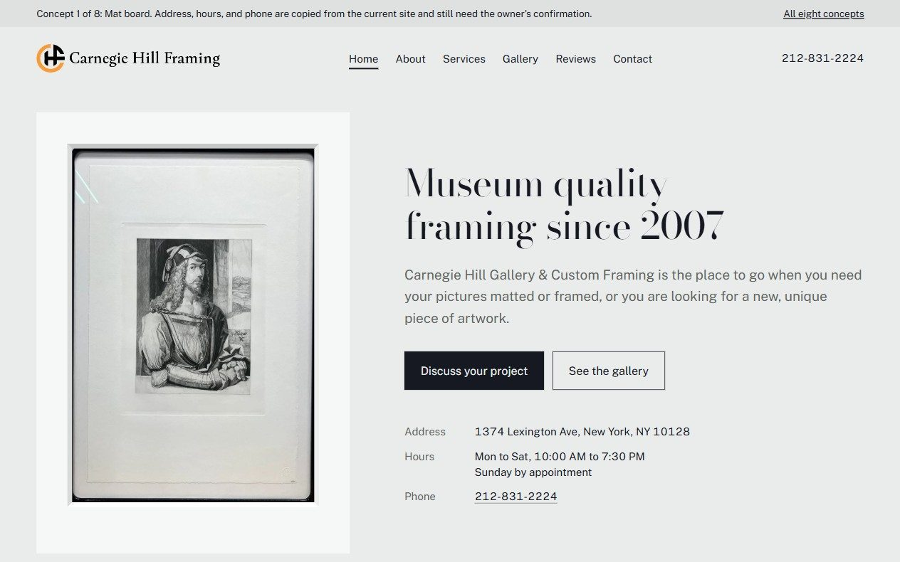
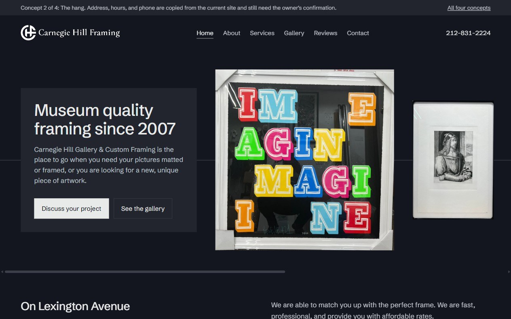

Mat board
Quiet and gallery like. Every picture is mounted on a board with a deeper margin at the bottom and its label printed in that margin, which is how a mat is actually cut. Cool grey greens read off the mat board in the shop's own photographs, with one olive gilt hairline.

The hang
The shop's frames are black and its mats are white, so the page carries no colour of its own and the work supplies all of it. Pictures sit in rows that share one centre line, the way they are hung on a wall, and the line runs the length of the row behind them.

Heritage craft
The older, quieter shop. Caslon on a dark wall the colour of the shop's own window frames, with the gilt taken off a gilt frame in the gallery, so it is olive rather than bright yellow. The gallery pieces hang on the dark wall.

Shop front
Built from the storefront. The burgundy awning crowns the page with its scalloped edge, the shop itself runs full width underneath, and the hours sit on a black sign strip below that. The yellow of the facade appears as one band, not as a whole page.
How to review
- Open each concept on a phone as well as a computer.
- Every page has a link back to this one at the top.
- The gallery page on each concept has a second tab showing frame samples and the shop.